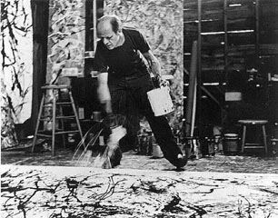

Quizás el uso más claro de la aleatoriedad en la pintura se dio en el movimiento del action painting, un conjunto de técnicas para pintar con grandes gestos que producen en el lienzo formas impredecibles.
Jackson Pollock (1912-1956) es quizás el más conocido entre los artistas que usaron salpicaduras para pintar. Hay muchas cosas que uno decide cuando pinta así (el soporte, los colores, la herramienta con la que salpica). Sin embargo, es imposible saber exactamente qué forma va a tener una salpicadura sobre la tela.
